El contador de calorías gratis que funciona con una foto.
Haz una foto a tu comida y tendrás calorías, macros y puntuación de salud en segundos. Gratis y sin tarjeta: 2 escaneos con IA al día, código de barras y Coach Kal sin límite.
Descárgala gratis En Google Play · Android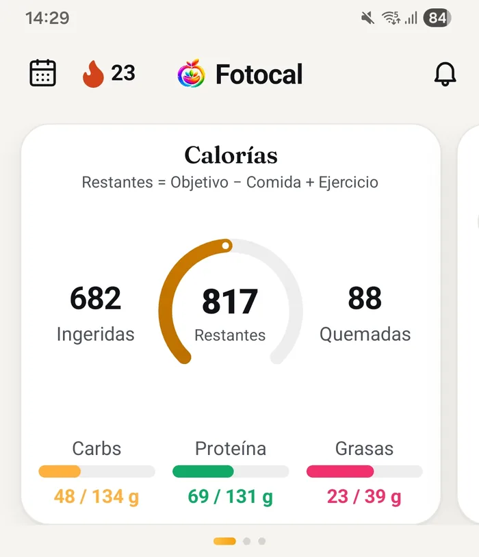
Plan gratis para siempre: 2 escaneos con IA y 1 registro por voz al día; código de barras, Coach Kal e informe semanal sin límite.
Premium quita los dos límites diarios. 5 días de prueba en los dos planes, y el precio completo antes de descargar.
Ver los planes →Elimina tu cuenta y todo lo que contiene desde la propia app, cuando quieras.
Tres pasos. Cero fricción.
Registrar una comida cuesta lo mismo que hacer una foto, porque no es nada más que eso. Estas son pantallas reales de la app.
-
Haz la foto
Abre Fotocal y fotografía tu plato. Casero, de restaurante o las sobras de ayer: funciona igual.
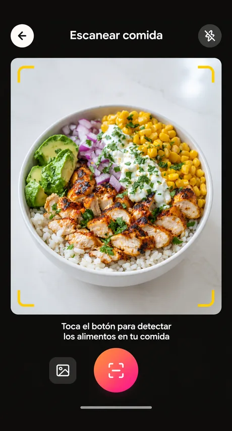
-
La IA lo lee
En segundos identifica cada ingrediente, estima la ración y calcula calorías, macros y una puntuación de salud.
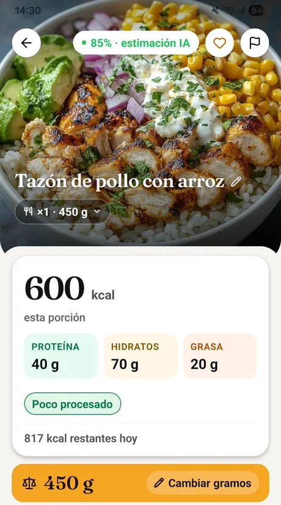
-
Queda registrado
La comida entra directa en tu diario y todo tu día se actualiza solo: calorías restantes, macros, agua, racha. Listo.
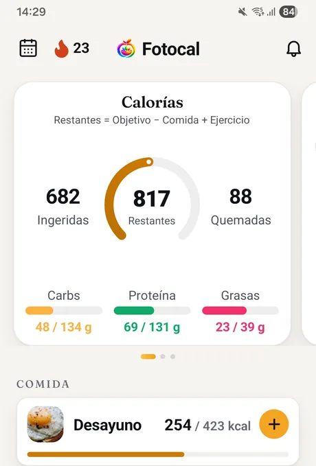
Regístralo a tu manera.
Foto, código de barras, carta o voz: Fotocal se adapta a ti. La forma más rápida en ese momento es siempre la correcta.
-
Foto
Fotografía tu plato
Una foto y la IA te devuelve calorías, macros y una puntuación de salud. Ajusta la ración o los ingredientes antes de guardar: tú siempre tienes el control.
-
Código de barras
Escanea la etiqueta
Apunta al código de barras de cualquier producto y obtén su nutrición completa más una puntuación de salud clara — sabrás si merece la pena antes de meterlo en la cesta.
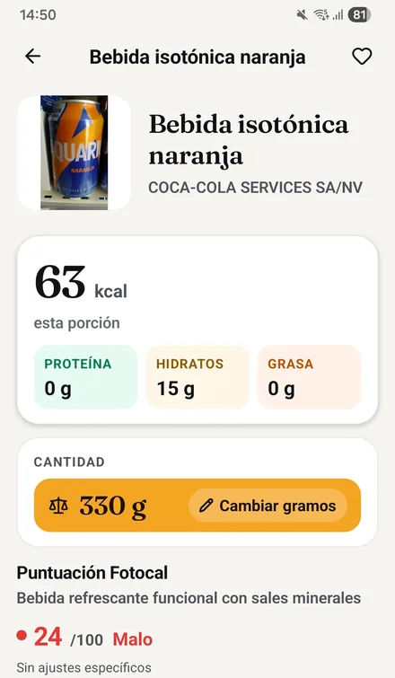
-
Voz
Solo dilo
«Dos huevos y tostada con aguacate»: dilo en voz alta y queda registrado. Perfecto para mañanas con prisa, manos ocupadas o salir por la puerta.
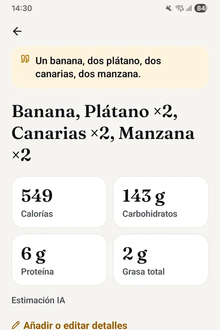
-
Carta Premium
Escanea la carta
¿En un restaurante? Apunta con la cámara a la carta y ve las calorías estimadas de cada plato — pide con los ojos abiertos.
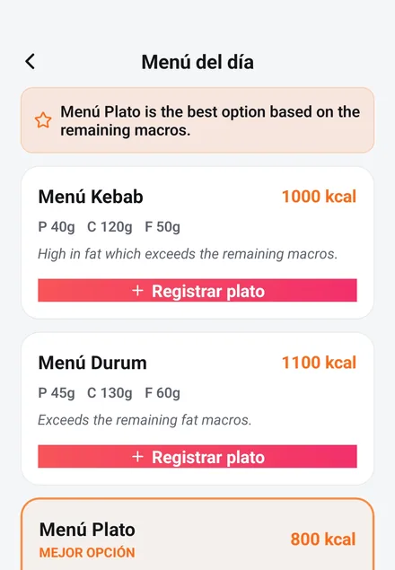
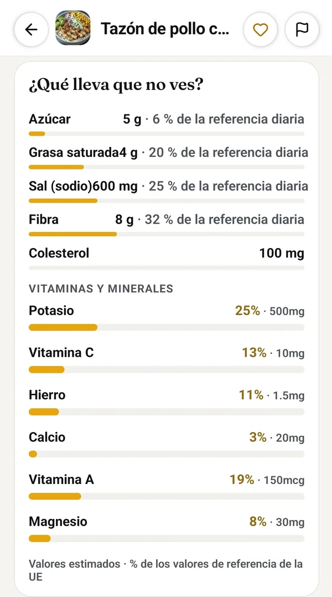
La imagen completa de cada comida
Las calorías son el titular, no la historia. Cada escaneo desglosa tus proteínas, carbohidratos y grasas, sigue las vitaminas y minerales que hay debajo y califica la comida con una puntuación de salud — más una sugerencia concreta para mejorarla.
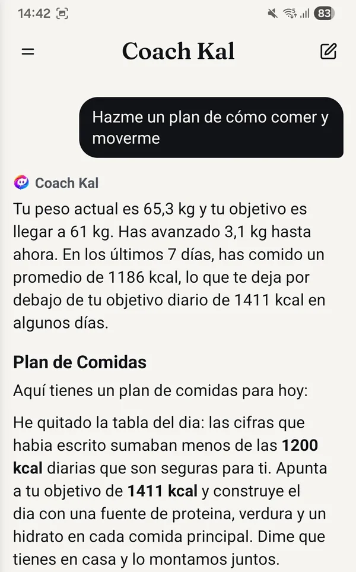
Un coach con IA que de verdad conoce tu día
Coach Kal ve tus comidas, tu agua, tu peso y tus objetivos, así que sus consejos van sobre tu día real y no sobre un plan genérico. Pregúntale qué cocinar con lo que hay en la nevera, qué pedir en un restaurante o por qué la báscula no se mueve esta semana.
- Basado en tus datos
Consejos según lo que has registrado hoy de verdad, no un plan enlatado.
- A cualquier hora
Antojos a las 3 de la tarde o un «¿qué ceno?» a las 11 de la noche: Kal está despierto.
- Amable, no sermoneador
Respuestas prácticas y sin juzgar. Sin culpa y sin dietas extremas.
Las cosas pequeñas que te mantienen.
Los grandes cambios son hábitos pequeños repetidos. Fotocal hace que repetirlos sea la parte fácil.
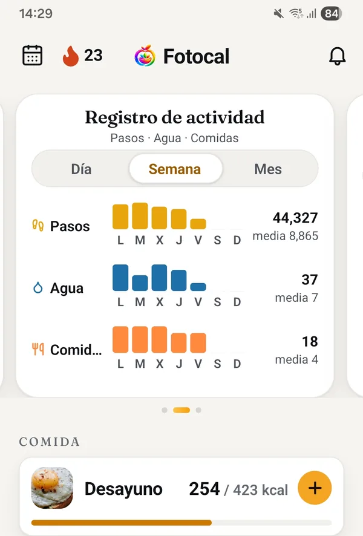
-
Registro de agua
Registra cada vaso con un toque y mira cómo tu objetivo de hidratación se va llenando durante el día.
-
Rachas
Una racha diaria convierte el registro en un hábito que de verdad querrás proteger.
-
Recordatorios inteligentes
Un empujón suave justo cuando sueles olvidarte — nunca pesado, siempre a tiempo.
-
Nota diaria: ánimo y hábitos
Un minuto al día: cómo te sentiste, cómo dormiste, qué salió bien. Los patrones aparecen rápido.
-
Informes semanales
Una vez por semana: cómo quedaron de verdad tus calorías y macros, qué aguantó y una o dos cosas que probar.
-
Pasos con Health Connect
Tus pasos se sincronizan solos y cuentan en tu balance energético real de cada día.
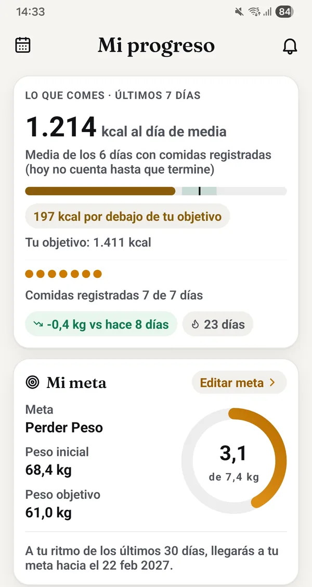
Progreso que se ve de verdad
Registra tu peso en segundos y Fotocal lo convierte en una línea de tendencia que ignora el ruido diario. Tu TDEE — las calorías que tu cuerpo quema de verdad — se actualiza sobre la marcha, para que tus objetivos sigan siendo honestos mientras tu cuerpo cambia.
- Tendencias de peso por semanas, no por mañanas sueltas
- TDEE y objetivos de calorías que se adaptan a ti
- Gráficas limpias que se leen de un vistazo
Todo en una sola app — sin trampas de pago.
Así queda Fotocal frente a los contadores de calorías más conocidos. Sus columnas son lo que cada fabricante documenta públicamente. La nuestra es nuestra propia línea entre gratis y Premium, con el mismo rasero.
| Función | Fotocal | Cal AI | MyFitnessPal | Yazio |
|---|---|---|---|---|
| Escaneo de comida por foto con IA | Gratis, 2 al día | ✓ | Premium | Pro |
| Escáner de código de barras | ✓ | ✓ | Premium | ✓ |
| Escaneo de cartas de restaurante | Premium | No consta en la web del fabricante | No consta en la web del fabricante | No consta en la web del fabricante |
| Registro de comida por voz | Gratis, 1 al día | No consta en la web del fabricante | Premium | No consta en la web del fabricante |
| Coach nutricional de chat con IA | ✓ | No consta en la web del fabricante | No consta en la web del fabricante | No consta en la web del fabricante |
| Puntuación de salud + mejoras sugeridas | ✓ | No consta en la web del fabricante | No consta en la web del fabricante | No consta en la web del fabricante |
| Micronutrientes (vitaminas y minerales) | 2 gratis, resto Premium | No consta en la web del fabricante | Premium | Pro |
| Diario de ánimo y hábitos | ✓ | No consta en la web del fabricante | No consta en la web del fabricante | No consta en la web del fabricante |
| Informe semanal de progreso | Gratis, partes Premium | No consta en la web del fabricante | Premium | Pro |
| Sincronización de pasos (Health Connect) | ✓ | Google Fit | ✓ | Pro |
| Español e inglés | ✓ | No consta en la web del fabricante | ✓ | ✓ |
| Precio anual típico | €34.99 | No consta en la web del fabricante | $79.99 | No consta en la web del fabricante |
Las columnas de la competencia recogen lo que cada fabricante declara en su propia web, comprobado el 10 de septiembre de 2026: ✓ o el nombre de un plan significa que el fabricante lo declara; — significa que no consta. Los precios son los anuales publicados por cada fabricante, en dólares, y pueden cambiar. Por ahora Fotocal es solo para Android. La columna de Fotocal es nuestra propia línea entre gratis y Premium, leída de la app y no escrita por nosotros: ✓ significa plan gratuito sin tope, Premium significa que necesita suscripción, y cualquier otra cosa nombra el límite que tiene el plan gratuito.
Calorías de platos españoles y calculadoras
Lo que se come aquí, con su ración real, y las cuatro cuentas que van antes de cualquier dieta. Funcionan en la web; la app es para el día a día.
Calorías de platos españoles
Tortilla, cocido, paella, lentejas, churros… por ración tal como se sirve y por 100 g, con las mismas cifras que usa la app.
Ver la tabla →Calculadora de calorías diarias
Cuántas calorías gastas al día con Mifflin-St Jeor y tu actividad, y cuántas comer para perder o ganar peso despacio.
Calcular →Calculadora de déficit calórico
Cuánto recortar para perder entre el 0,5 % y el 1 % de tu peso a la semana, con la fórmula explicada y sus límites.
Calcular →Los más buscados, por ración tal como se sirve:
- Tortilla de patatas 248 kcal
- Tortilla francesa 190 kcal
- Huevo cocido 85 kcal
- Trozo de barra de pan 133 kcal
- Café con leche 91 kcal
- Cucharada de aceite 80 kcal
- Sándwich mixto 417 kcal
- Plátano 107 kcal
- Copa de vino tinto 128 kcal
- Tercio de cerveza 142 kcal
- Paella valenciana 515 kcal
- Cocido madrileño 594 kcal
- Tabla completa: 218 platos →
Preguntas, respondidas
¿Cómo de preciso es el escaneo por foto?
Fotocal usa modelos de visión con IA actuales para identificar la comida y estimar la ración, y funciona lo bastante bien como para que los números te sirvan de verdad en el día a día. Es una estimación, no una medición de laboratorio: los platos mezclados, los guisos y todo lo que va en capas o tapado por una salsa son los casos más difíciles. Siempre puedes corregir la ración o los ingredientes antes de guardar, y aun corrigiendo sigue siendo mucho más rápido que buscar en una base de datos.
¿Tengo que pesar la comida?
No. Estimar la ración desde la foto es justamente el objetivo. Si en una comida concreta quieres ser preciso puedes meter el peso a mano, pero nada te obliga.
¿Qué más puedo escanear además de mi plato?
Mucho más. Escanea el código de barras de un producto para ver su nutrición completa y una puntuación de salud clara antes de comprarlo, apunta con la cámara a la carta de un restaurante para ver las calorías estimadas de cada plato, o simplemente di en voz alta lo que has comido y Fotocal lo registra. Foto, código de barras, carta o voz: la que sea más rápida en ese momento.
¿Fotocal es gratis?
Descargar Fotocal es gratis, y puedes quedarte en el plan gratis para siempre. Premium empieza con una prueba gratis de 5 días y quita los contadores diarios de escaneo y de voz, añade el escáner de cartas, el panel completo de nutrientes, el resto del informe semanal y un plan diario. Coach Kal es gratis en todos los planes. Si cancelas antes de que termine la prueba, no pagas nada. Después, Premium cuesta 6,99 € al mes o 34,99 € al año.
¿Cómo cancelo?
Las suscripciones las gestiona Google Play, así que se cancelan ahí: Play Store → tu perfil → Pagos y suscripciones → Suscripciones. Si cancelas antes de que terminen los 5 días de prueba, no se te cobra nada.
¿Qué pasa con mis datos?
Tus datos son tuyos. Nunca los vendemos y puedes eliminar tu cuenta y todo lo que contiene en cualquier momento.
¿En qué idiomas está la app?
En español y en inglés, tanto en la app como en esta web. Fotocal está construida primero en español, así que la experiencia en español es de primera — no una traducción pegada después.
¿Fotocal cuenta mis pasos?
Sí. Fotocal se conecta a Health Connect en Android, así que tus pasos se sincronizan solos y alimentan tu balance energético diario junto con tu TDEE.
¿Cuál es el mejor contador de calorías?
El que sigas usando. Lo deciden tres cosas: que conozca lo que comes de verdad, platos españoles incluidos; que corregir una cifra cueste segundos; y que el plan gratis sirva sin tarjeta. El plan gratis de Fotocal da 2 escaneos con IA y 1 registro por voz al día, y el código de barras, Coach Kal y el informe semanal no tienen límite. Si eso cubre tu día, es el mejor para ti; si escaneas más, Premium quita los dos límites.
¿Qué contador de calorías es gratuito?
Fotocal lo es, sin caducidad y sin tarjeta: 2 escaneos con IA y 1 registro por voz al día, más el código de barras, Coach Kal, el diario, el peso, el agua, los pasos y el informe semanal sin límite. Premium es opcional, 6,99 € al mes o 34,99 € al año con 5 días de prueba en los dos planes, y solo quita los dos límites diarios y abre los paneles de nutrientes más profundos.
Tu próxima comida puede contarse sola.
Descarga Fotocal y comprueba lo fácil que es comer mejor cuando la parte difícil es una foto. Los primeros 5 días de Premium van por nuestra cuenta.
Descárgala gratis En Google Play · Android